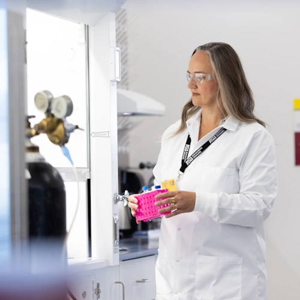

Meet the Four Principal Investigators of This Training Grant:
Teresa Wu
President's Professor, School of Computing and Augmented Intelligence
Teresa Wu is interested in developing AI model on multimodal data (neuroimaging, genetics) for AD early detection, diagnosis and prognosis.
Baoxin Li
Associate Director and Professor, School of Computing and Augmented Intelligence
Baoxin Li’s research focuses on leveraging AI and deep learning techniques to analyze medical imaging for advancing understanding and treatment of Alzheimer's disease.
Ramon Velazquez
Assistant Professor, School of Life Sciences and the ASU-Banner Neurodegenerative Disease Research Center

Dr. Velazquez focuses on (1) identifying the role of environmental factors (e.g. toxins, diet) on neurodegenerative disease and (2) developing therapies to slow the progression of neurodegenerative disease process in Alzheimer’s disease and the tauopathies.
Judith Klein-Seetharaman
Professor, College of Health Solutions
Judith Klein-Seetharaman is interested in biomolecular aspects of healthy aging and reversing declines in cognitive, immune and muscle function through interventions related to metabolism.